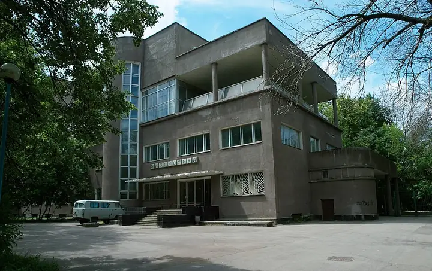

Подборку собрали 20 октября, прошедшие события скрыты. Свежая афиша — на главной

Фото: NVO, CC BY-SA 3.0 · Wikimedia Commons
Культурный центр · ЮАО
Культурный центр ЗИЛ
Конструктивистский дворец культуры: спектакли, кино, лекции.
- ₽ · до 1 500 ₽ на человека
- в 2 планах
- 1 событие в афише
Позвать сюда: Культурный центр ЗИЛОткрыть в каталоге: Культурный центр ЗИЛМаршрут до места: Культурный центр ЗИЛ
Адрес и детали
- Адрес
- Восточная ул., 4, корп. 1
Открыть на Яндекс Картах (в новой вкладке) - Метро
- м. Автозаводская
- Округ
- Юг (ЮАО)
- Цена
- до 1 500 ₽ на человека
- Проверено
- работает — проверили в октябре 2026
Планы с этим местом 2
- Культурный центр ЗИЛ · Культурный центр · м. Автозаводская
- 13 минут пешкомStrEAT · Фудхолл
Лекция или кино в конструктивистском ДК ЗИЛ, а потом фудхолл StrEAT в корпусе завода «Динамо»: дагестанские хинкалы или баббл-ти — каждый берёт своё.
Открыть план: ДК ЗИЛ и уличная едаПозвать сюда: ДК ЗИЛ и уличная еда
Фото: NVO, CC BY-SA 3.0 · Wikimedia Commons
- Культурный центр ЗИЛ · Культурный центр · м. Автозаводская
- 8 минут пешкомАвлабар · Грузинский ресторан
Конструктивистский дворец культуры ЗИЛ и хинкали в «Авлабаре» у Автозаводской.
Открыть план: ДК ЗИЛ и ГрузияПозвать сюда: ДК ЗИЛ и Грузия
Фото: NVO, CC BY-SA 3.0 · Wikimedia Commons

Афиша площадки 1
Культурный центр ЗИЛ · м. Автозаводская · от 2 500 ₽ · 18+
Варвара Щербакова привозит новую программу — спокойную, ироничную, без надрыва. Можно идти вдвоём или собрать подруг.
Подробнее: Варвара ЩербаковаПозвать сюда: Варвара ЩербаковаБилеты : Варвара Щербакова (страница с билетами, откроется в новой вкладке)
Фото: NVO, CC BY-SA 3.0 · Wikimedia Commons
Похожие рядом


Что ещё рядом
Как позвать
- Выбери план, место или событие — в карточке адрес, цены и маршрут в Яндекс Картах.
- Нажми «Позвать сюда» — соберётся приглашение-игра для свидания или голосование для компании.
- Отправь ссылку в любой мессенджер: тебе ответят, а компания отметит, куда и когда может. Бесплатно и без регистрации.